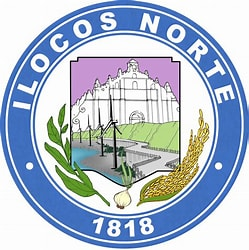

Bagong Pilipinas Caravan
Home
LTO
DOH
DOT
PGIN
DTI

Elected Officials
Governor
Matthew J. Marcos Manotoc
Vice-Govenor
Cecilia Araneta Marcos
Sangguniang Panlalawigan Members
Rafael Medina
Rodolfo Christian G. Fariñas III
Medeldorf M. Gaoat
Saul Lazo
Franklin Dante A. Respicio
Donald G. Nicolas